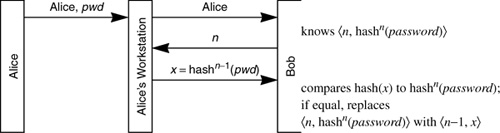

Networking Security Networking Security Networking Security Security Networking Security Networking Security Networking Charlie Kaufman Radia Perlman Mike Speciner Prentice Hall Network Security: Private Communication in a Public World, Second Edition Networking Security Networking Security Networking Security Security Networking Security Networking Security Networking Charlie Kaufman Radia Perlman Mike Speciner Prentice Hall Network Security: Private Communication in a Public World, Second Edition
12.2. Lamport's Hash
It's a poor sort of memory that only works backwards.
ÂThe White Queen (in Through the Looking Glass)
Leslie Lamport invented an interesting one-time password scheme [LAMP81]. This scheme allows Bob to authenticate Alice in a way that neither eavesdropping on an authentication exchange nor reading Bob's database enables someone to impersonate Alice, and it does it without using public key cryptography. Alice (a human) remembers a password. Bob (the server that will authenticate Alice) has a database where it stores, for each user:
username n, an integer which decrements each time Bob authenticates the user hashn(password), i.e., hash(hash(...(hash(password))...))
First, how is the password database entry associated with Alice configured? Alice chooses a password, and a reasonably large number n (like 1000) is chosen. The user registration software computes x1=hash(password). Then it computes x2=hash(x1). It continues this process n times, resulting in xn=hashn(password), which it sends to Bob, along with n.
When Alice wishes to prove her identity to Bob, she types her name and password to her workstation. The workstation then sends Alice's name to Bob, which sends back n. Then the workstation computes hashn-1(password) and sends the result to Bob. Bob takes the received quantity, hashes it once, and compares it with its database. If it matches, Bob considers the response valid, replaces the stored quantity with the received quantity, and replaces n by n-1.
If n ever gets to 1, then Alice needs to set her password again with Bob. There is no completely secure way of doing this over an insecure network, since this scheme does not allow encryption or integrity protection of messages between Alice and Bob. But in practice, in many situations, it suffices for Alice to choose a new password, compute hashn(new password), and transmit hashn(new password) and n to the server unencrypted across the network.
An enhancement is to add salt, a number chosen at password installation time to be unique for user Alice. The salt is stored at Bob and concatenated to the password before hashing. So rather than computing hashn(password), the enhanced Lamport hash computes hashn(password|salt). To set the password, the workstation chooses a value for salt, and computes x1=hash(password|salt), then x2=hash(x1), then continues this process n times, resulting in xn=hashn(password|salt), which it sends to Bob, along with n and salt.

What do we gain by adding salt? It allows Alice to securely use the same password on multiple servers as long as a different salt value is used when installing the password on each of the other servers. When she logs into Bob, she'll wind up decrementing the n stored at Bob, but this will not affect the n stored at other servers. In other words, when she logs into Bob, if Bob sends her workstation <n=87, salt=69>, her workstation will compute hash86(password|69). If when Bob hashes the received quantity the result matches hash87(password|69) in his database, then Bob will decrement n and replace the stored hash with the received hash. When she logs into Fred, Fred might send her workstation <n=127, salt=105>, in which case her workstation will compute hash126(password|105) to send to Fred. A way of ensuring that the salt is different on different servers is to also hash in the server name, as in xn=hashn(password|salt|servername).
Another advantage of salt is that Alice does not need to change her password when n decrements to 1 at Bob. Instead the same password can be reinstalled with a different salt value.
There's an additional value to salt, which is the same as the original UNIX reason for adding salt to the password database (see §5.2.4.1 UNIX Password Hash). Adding salt prevents an intruder from precomputing hashk for all passwords in a dictionary and all values of k from 1 through 1000, stealing the database at Bob, and then comparing the precomputed hashes with the stolen password hashes of all the users.
Lamport's hash has interesting properties. It is similar to public key schemes in that the database at Bob is not security sensitive (for reading), other than dictionary attacks to recover the user's password. It has several disadvantages relative to public key schemes. One problem is that you can only log in a finite number of times before having to reinstall password information at the server.
Another problem is there is no mutual authentication, i.e., Alice does not know she is definitely talking to Bob. This makes it difficult to establish a session key or prevent a man-in-the-middle attack. One might try to have Alice authenticate herself and then do a Diffie-Hellman exchange with Bob to establish a session key. But Trudy could hijack the conversation after the inital authentication and before the Diffie-Hellman exchange. Another idea might be for Alice and Bob to do the Diffie-Hellman exchange first and then do the authentication handshake protected with the Diffie-Hellman key. But Trudy could act as a man-in-the-middle, establishing a separate Diffie-Hellman key with each of Alice and Bob, and simply relay the authentication handshake. Once Alice sends the authentication information, Trudy can break her connection with Alice and continue conversing with Bob, impersonating Alice.
There's another security weakness, which we'll call the small n attack. Suppose an intruder, Trudy, were to impersonate Bob's network address and wait for Alice to attempt to log in. When Alice attempts to log into Bob, Trudy sends back a small value for n, say 50 (and Alice's salt value at Bob, which she can know from having eavesdropped on a previous authentication by Alice to Bob). When Alice responds with hash50(password), Trudy will have enough information to impersonate Alice for some time, assuming that the actual n at Bob is greater than 50. What can be done to protect against this? Alice's workstation could display n to the human Alice. If Alice remembers approximately what n should be, then Alice can do a rough sanity check on n.
Lamport's hash can also be used in environments where the workstation doesn't calculate the hash, for example when:
Alice is logging in from a "dumb terminal" Alice is logging in from a workstation that does not have Lamport hash code, or Alice is logging in from a workstation that she doesn't trust enough to tell her password
We'll call this the human and paper environment, and call the other environment the workstation environment. The way Lamport's hash works in the human and paper environment is that when the information <n,hashn(password)> is installed at the server, all the values of hashi(pass-word) for i<n are computed, encoded into a typeable string, printed on a paper, and given to Alice. When she logs in, she uses the string at the top of the page, and then crosses that value out, using the next value the next time. This approach automatically protects against the small n attack. Of course, losing the piece of paper, especially if it falls into the wrong hands, is a problem.
How big a string does Alice have to type? Ordinarily, a hash function is 128 bits, which would mean a string of about 20 characters. This would be fairly annoying to type. But the scheme is sufficiently secure if a 64-bit hash is used, and then Alice only has to type about 10 characters. It's not necessary to invent a 64-bit hash function. Any hash function (such as MD5) can be used, and have all but 64 bits of the output discarded.
It is interesting that the human and paper environment is not vulnerable to the small n attack, since the human just always uses the next value on the list and can't be tricked into sending an item further down on the list.
There is a deployed version of Lamport's hash, known as S/Key, implemented by Phil Karn. It was standardized in RFC 1938 A one-time password system. It operates in both the workstation and human and paper environments. It makes no effort to address the small n attack, but it certainly is a vast improvement over cleartext passwords and is gaining popularity.
|